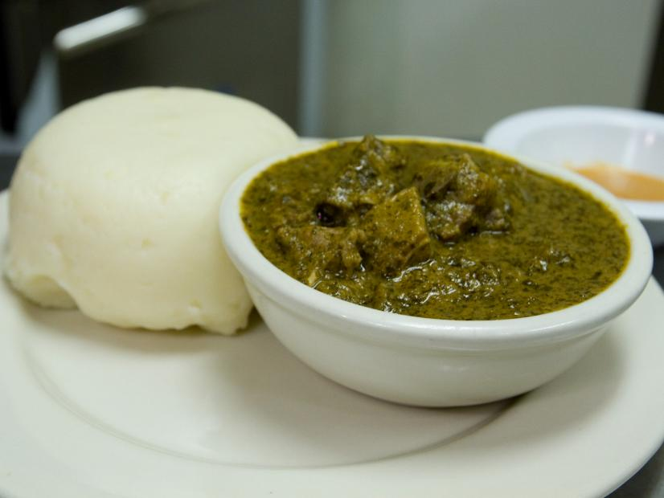

Go back to the bottom
Isombe is a great food ,where you can make pounded yum or green sauce you can eat with whatever you choose.
Isombe have nutrients like proteins,vitamin A,vitamin C and fibers. Hope you're going to enjoy!!!!!
Ingredients:
- 1kg of pounded cassava leaves
- 1kg of spinach
- 1 kg of cow legs
- 3 chopped green onions
- 1/4 of palm oil
- 0.75 kg of pounded ground nuts
- 3 beef spice cubes
- salt
- 3 green peppers
- 3 cubes of maggi or onja
- 2 litles of water
Steps of how to prepare isombe:
- In pot with very hot water add chopped cow legs and let it boil for few(2)minutes.
- Add pounded green cassava leaves into the boiled cow leg water
- As the water decreases add some(water),until it is well cooked for like 45 minutes or an hour.
- In another pot add palm oil and ground nuts ,keep stirring them to avoid sticking on the bottom of the pot
- Add the cooked cassava leaves,then the remaining ingredients(chopped green peppers,maggi,beef spices)
- Reduce the fire and Let it boil for like 20 minutes to be well cooked
- Serve this delicious cassava leaves with rice,ugali or cassava roots,and lastly ENJOY!!!
Return to the top